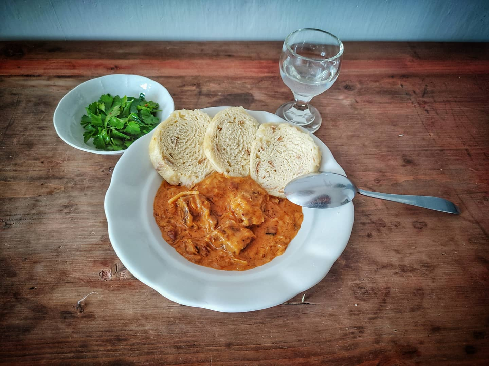

Segedínsky guláš podľa @vintagechef_anny — Normy Jedál
Székely gulyás z krku
🧡
Méně tradiční varianta klasického pokrmu z Uher vhodná především pro strávníky, kteří z jakýchkoliv důvodů nemohou vepřové maso požívati. I v této úpravě je velmi chutný, navíc pak ztrácí na své tučnosti.
Místo krkovice použije se maso také z krku, avšak hovězího. Pro dva strávníky stačí bohatě asi 30 dkg takového masa. To je potřeba dobře očistit, ale trochu tukové vrstvy nutno ponechat, skrájet na větší kostky a nasolit.
V kastrolku se rozpálí sádlo nejlépe také z oblasti Uher, z chlupatého vepře zvaného mangalica, a na něm se opeče asi 10 dkg pěkné slaniny. Na vypečeném tuku orestuje se zprudka i to maso. Následně se zasype dvěma pokrájenými většími cibulemi a vše se opéká, než cibule chytí zlatavou barvu a kastrol se dole připaluje.
Dále se do kastrolku přidá dostatek sladké mleté maďarské papriky, a je-li po ruce, také na chuť trochu mleté papriky uzené. Ta se musí opéct jen velmi krátce, aby nezhořkla. Pak se vše zalije vodou, lépe však hovězím vývarem. Ochutí se pepřem pro větší pikantnost a trochou mletého kmína.
Maso je třeba dusit alespoň půl druhé hodiny.
Těsně před tím než je maso úplně měkké, přidá se k němu do kastrolku dobré kyselé zelí a pospolu se dusí až do úplné měkkosti.
Pak už se jen zahustí skleničkou kyselé smetany, pro větší zhuštění jest dobře jí rozmíchat s troškou vody a hladké mouky. S moukou nutno však povařit ještě aspoň deset minut.
K servírování se hodí kynutý knedlík a na sražení mastnoty lze také přikusovat salát ze zdravé petržele.
#food #foodblog #foodblogger #foodblogfeed #foodlover #foodstagram #foodie #cooking #cookingtime #cookingram #cookingwithlove #eat #eating #gulash #gulyas #gulyás #recipe #recipes #recept #recepty #vareni #varenie #varenijeradost #jidlo #jidlojelaska #jidlonaprvnimmiste #gulas #gulasch #segedin #segedinskygulas